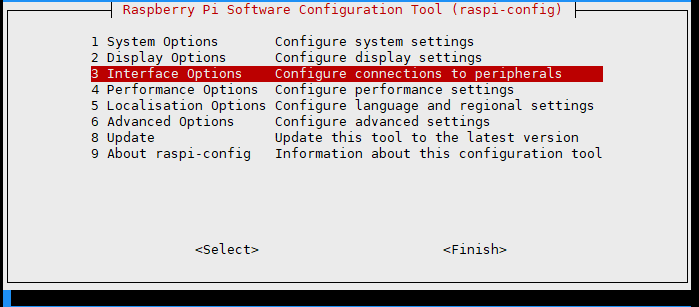
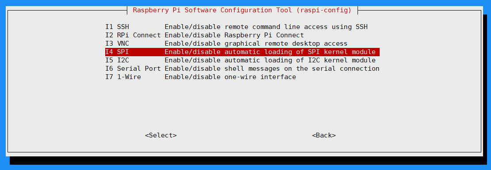
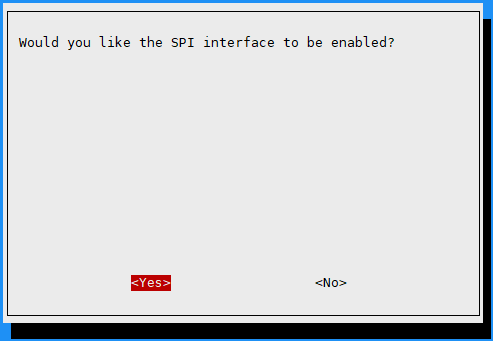
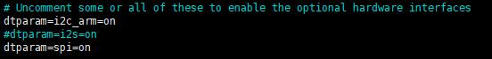

Raspberry Pi User Guide
Hardware Connection
Insert the e-Paper HAT directly into the Raspberry Pi 40-pin GPIO header, and make sure all pins are aligned correctly before powering on.
Enable SPI Interface
Open the Raspberry Pi terminal and run the following command:
sudo raspi-config
# Select Interfacing Options -> SPI -> Yes to enable the SPI interface



Then restart your Raspberry Pi:
sudo reboot now
Check /boot/config.txt or /boot/firmware/config.txt to confirm that SPI is enabled:

sudo cat /boot/config.txt
# Or for newer systems
sudo cat /boot/firmware/config.txt
Choose a demo language:
C Language
Install lg Library
Open the Raspberry Pi terminal and run the following commands:
wget https://github.com/joan2937/lg/archive/master.zip
unzip master.zip
cd lg-master
make
sudo make install
For more details, refer to the source code: https://github.com/gpiozero/lg
On Raspberry Pi OS, installing the lg library is usually enough to run the C demo.
If the demo fails to compile or run, install the additional libraries below as needed.
Install gpiod Library If Needed
Open the Raspberry Pi terminal and run the following commands:
sudo apt-get update
sudo apt install gpiod libgpiod-dev
Install BCM2835 If Needed
Open the Raspberry Pi terminal and run the following commands:
wget http://www.airspayce.com/mikem/bcm2835/bcm2835-1.71.tar.gz
tar zxvf bcm2835-1.71.tar.gz
cd bcm2835-1.71/
sudo ./configure && sudo make && sudo make check && sudo make install
For more information, refer to the official website: http://www.airspayce.com/mikem/bcm2835/
Install WiringPi If Needed
Open the Raspberry Pi terminal and run the following command:
sudo apt-get install wiringpi
For Raspberry Pi systems released after May 2019, you may need to upgrade WiringPi. Earlier systems may not require this step.
wget https://project-downloads.drogon.net/wiringpi-latest.deb
sudo dpkg -i wiringpi-latest.deb
gpio -v
Running gpio -v should display version 2.52. If it does not, the installation was not successful.
For Bullseye systems, use the following commands instead:
git clone https://github.com/WiringPi/WiringPi
cd WiringPi
./build
gpio -v
Running gpio -v should display version 2.60. If it does not, the installation was not successful.
Download Demo Code
If you have already downloaded the code, you can skip this step.
git clone https://github.com/lafvintech/LAFVIN-2.9inch-ePaper-HAT.git
cd LAFVIN-2.9inch-ePaper-HAT/RaspberryPi
Compile the Demo Program
Note
On Raspberry Pi OS, try compiling after installing only the lg library first.
If you encounter missing dependency errors, return to the optional library steps above and install the required packages.
-j4 uses 4 threads for compilation, and you can adjust the number as needed.
EPD=epd2in13V4 specifies the macro definition used by the test demo in the main function.
cd c
sudo make clean
sudo make -j4 EPD=epd2in13V4
Run the Demo Program
sudo ./epd
Python
Install Libraries for Python 3
sudo apt-get update
sudo apt-get install python3-pip
sudo apt-get install python3-pil
sudo apt-get install python3-numpy
If you encounter a spidev-related error while running the demo, install it with:
sudo pip3 install spidev
You can continue without installing it first. If an error occurs during execution, install it at that time.
Install Libraries for Python 2
sudo apt-get update
sudo apt-get install python-pip
sudo apt-get install python-pil
sudo apt-get install python-numpy
If you encounter a spidev-related error while running the demo, install it with:
sudo pip install spidev
You can continue without installing it first. If an error occurs during execution, install it at that time.
Install gpiozero Library
Note
This library is installed by default on most systems. If it is missing, install it with the following commands:
sudo apt-get update
# Python 3
sudo apt install python3-gpiozero
# Python 2
sudo apt install python-gpiozero
Download Demo Code
If you have already downloaded the code, you can skip this step.
git clone https://github.com/lafvintech/LAFVIN-2.9inch-ePaper-HAT.git
cd LAFVIN-2.9inch-ePaper-HAT/RaspberryPi/python/examples
Run the Demo Program
sudo python3 epd_2in13_V4_test.py
Note
If you cannot download the code from GitHub, you can use the following commands to download the ZIP file and extract it. The remaining steps are the same as above.
wget https://github.com/lafvintech/LAFVIN-2.9inch-ePaper-HAT/archive/refs/heads/main.zip
unzip main.zip
cd LAFVIN-2.9inch-ePaper-HAT-main
Replace the path LAFVIN-2.9inch-ePaper-HAT with LAFVIN-2.9inch-ePaper-HAT-main in the commands that follow.